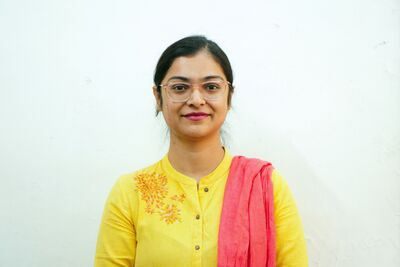
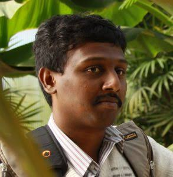
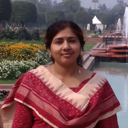

Programme
Schedule
A multi-disciplinary gathering of visionaries, researchers, and policymakers dedicated to the future of global sustainability. All plenary sessions hosted at the TTJ Auditorium, ICSR Building.
Primary Venue
TTJ Auditorium, ICSR Building, IIT Madras
Event Dates
July 23 – July 25, 2026
Pre-Conference Workshop · Skill-Based Intensive Sessions · Hall III, ICSR Building
AI in Circularity
Smart Decision Intelligence · Machine Learning · Predictive Maintenance · Intelligent LCA

Dr. Abhinav S. Raman
IIT Madras

Dr. Mudit Dixit
CSIR-CLRI, Chennai
menu_book View Workshop Abstract & Topics expand_more
This workshop will cover an introduction to basic Machine learning (ML) as well as language models (LLMs), followed by hands-on sessions. The overarching theme will be how these approaches can be leveraged in sustainability and circularity applications. Participants will explore how algorithms can optimize resource recovery, predict material lifetimes, and accelerate the discovery of sustainable alternatives.
Topics covered:
- Introduction to the basics of ML, including supervised and unsupervised learning, regression models, and classification tasks.
- Introduction to Large Language Models, detailing their architecture, training phases, and generative capabilities.
- Common LLMs and their pitfalls when dealing with scientific data, showing hands-on examples of hallucinations and bias.
- Advanced approaches involving LLMs for scientific data retrieval, featuring demos and hands-on examples of semantic search.
Participant Requirements: Participants must bring a laptop with Wi-Fi capability. Access to a Google account is required to participate in the hands-on coding sessions using Google Colab. Prior familiarity with basic programming concepts is recommended but not mandatory.
person View Speaker Biographies expand_more
Dr. Abhinav S. Raman
Abhinav S. Raman is currently an Assistant Professor in the Department of Chemical Engineering at IIT Madras, where his group combines advances in artificial intelligence & machine learning with molecular simulations to accelerate a sustainable energy future. Before this, he was a postdoctoral research associate with Prof. Annabella Selloni in the Department of Chemistry at Princeton University. He obtained his PhD in Chemical Engineering from the University of Pennsylvania, working with Prof. Aleksandra Vojvodic, supported by a Graduate Fellowship from the Vagelos Institute for Energy Science and Technology. Prior to that, he obtained his Master’s in Chemical Engineering from Rutgers University and completed his undergraduate studies at SASTRA University.
Research Group: Condensed Matter Engineering Lab ↗
Dr. Mudit Dixit
Mudit Dixit is presently a Senior Scientist at CSIR-CLRI. His group (CELL: Computational Catalysis and Electrochemical Energy Lab) harnesses computational materials science to discover and understand advanced materials for energy applications. His group focuses on combining first-principles calculations, machine learning, and artificial intelligence to design improved materials for rechargeable batteries and catalysis. He obtained his Ph.D. in Theoretical Chemistry from the National Chemical Laboratory (NCL), Pune, under the supervision of Prof. Sourav Pal. He carried out his postdoctoral research at Bar-Ilan University, Israel, and the University of Pittsburgh, USA. Prior to joining CSIR-CLRI, he worked as an Assistant Professor at BITS Pilani, Hyderabad Campus. He has published over 70 journal articles in leading international journals (with 4,800 citations and an h-index of 29). His current research focuses on developing computational and data-driven approaches for electrochemical energy applications and catalysis.
Research Group: CELL ↗
Green Economy & Sustainable Engineering
Circular Business Models · Sustainable Design · Life Cycle Assessment · Green Supply Chains

Dr. Santosh Kumar Sahu
IIT Madras

Prof. Pradip Kalbar
IIT Bombay
menu_book View Workshop Abstract & Topics expand_more
This skill intensive workshop focuses on the transition toward a green economy through the lens of sustainable engineering and life cycle thinking. Participants will delve into the methodologies of Life Cycle Assessment (LCA) to quantify environmental footprints and guide decision-making in sustainable product design. We will examine circular business models, green supply chain optimization, and strategies for minimizing resource depletion and emissions.
Topics covered:
- Introduction to green economics, circularity metrics, and environmental indicators.
- Methodologies of Life Cycle Assessment (LCA) and environmental footprinting.
- Strategies for circular business models and sustainable product/process design.
- Optimization of green supply chains, industrial symbiosis, and resource recovery systems.
Participant Requirements: Participants must bring a laptop with Wi-Fi capability. Basic spreadsheet software (Excel/Google Sheets) or Python environment is recommended for simple LCA modeling exercises.
person View Speaker Biographies expand_more
Dr. Santosh Kumar Sahu
Dr. Santosh Kumar Sahu is an Associate Professor of Economics in the Department of Humanities and Social Sciences and an Associate Faculty at the School of Sustainability at IIT Madras, Chennai. He is also an affiliated researcher at the Energy Consortium at IIT Madras. He has received several awards, including the Trend Setters Grant Award, the Australia Awards India Fellowship, and Prof. Raghuram Rajan’s Young Scholar Grant Award. He completed his doctoral research at IIT Bombay in 2013, where his dissertation, Economics of Energy Use in Indian Industries, received the Excellence in PhD Research Award. His research interests include energy economics, applied microeconomics, industrial economics, institutional economics, economics of climate change, and techno-economic analysis, including life cycle assessment. He teaches courses such as Statistical Inference, International Economics, Energy Economics, Climate Economics, Principles of Economics, Applied Economics, and Applied Econometrics, having previously taught at the Madras School of Economics and Gati Shakti Vishwavidyalaya.
Prof. Pradip Kalbar
Prof. Pradip Kalbar is an Associate Professor at the Centre for Environmental Science and Engineering (CESE), IIT Bombay. He received his PhD from IIT Bombay in 2013, an M.Tech in Environmental Engineering from VJTI Mumbai in 2007, and a B.E. in Environmental Engineering from Shivaji University in 2005. He has received numerous awards, including the Early Research Achiever Award 2019, the Young Faculty Award 2016 from IIT Bombay, the PRISMA Sustainability Assessment and Policy Award 2020 (Second Prize), and the prestigious H.C. Ørsted Postdoctoral Fellowship (2014–2016) co-funded by the Marie Curie Actions Program. He serves as an Editor of the Water Reuse journal published by IWA. His research interests encompass water supply systems (including alternate designs, reducing non-revenue water, and hydraulic modeling), wastewater management, sustainability assessment (LCA, circular economy strategy development, and water footprinting), and infrastructure resilience.
Networking Lunch Break
Multiscale Modelling in Industrial Practices
Process Modelling · Simulation Tools · Data-Driven Optimization · Digital Twins

Dr. Himanshu Goyal
IIT Madras

Dr. Jayabrata Dhar
NIT Durgapur
menu_book View Workshop Abstract & Topics expand_more
This workshop explores the principles and applications of multiscale modelling as a cornerstone of modern industrial optimization and circular engineering. Bridging the gap between molecular-level phenomena and macro-scale process design, we will cover how digital twins, process simulation tools, and data-driven optimization algorithms can be integrated into industrial workflows.
Topics covered:
- Fundamentals of multiscale modeling from molecular to macro-process levels.
- Introduction to simulation tools (e.g., CFD, process flowsheeting) in industrial design.
- Data-driven optimization methods and integration of machine learning in physical systems.
- Digital twins: building real-time predictive models for chemical and energy systems.
Participant Requirements: Participants must bring a laptop with Wi-Fi capability. Access to a web browser is required for browser-based simulation tools and interactive Jupyter/Colab notebooks.
person View Speaker Biographies expand_more
Dr. Himanshu Goyal
Dr. Himanshu Goyal is an Associate Professor in the Department of Chemical Engineering at the Indian Institute of Technology (IIT) Madras. He received his B.Tech. in Chemical Engineering from IIT Guwahati in 2011. Before pursuing higher studies, he worked at Reliance Industries Limited and the Indian Institute of Science (IISc). He then moved to Cornell University, where he obtained his M.S. in 2017 and PhD in 2018. Prior to joining IIT Madras in 2019, he worked as a postdoctoral researcher for a year at the University of Delaware.
Dr. Jayabrata Dhar
Dr. Jayabrata Dhar is an Assistant Professor in the Department of Mechanical Engineering at NIT Durgapur. He received his M.Tech. in 2013 and PhD in 2017 in Mechanical Engineering (specializing in Thermal Science and Engineering) from the Indian Institute of Technology Kharagpur. He was a Postdoctoral Fellow at Geosciences Rennes, Université Rennes 1, France, from 2018 to 2019, and a Human Frontiers Science Program Postdoctoral Fellow in the Physics of Living Matter Group at the University of Luxembourg from 2019 to 2022. His research interests focus on microfluidics, electrokinetics, complex fluids, transport phenomena in biological systems, and the hydrodynamics of active materials.
Circularity in Energy Transition
Battery & Solar Energy Focus
Battery Circularity · Solar Energy Systems · Critical Minerals Recovery · Sustainable Energy Transition

Dr. Nitin Muralidharan
IIT Madras

Dr. Sreeram K. Kalpathy
IIT Madras
menu_book View Workshop Abstract & Topics expand_more
This workshop addresses critical aspects of circularity in renewable energy systems, focusing specifically on battery and solar technologies. Participants will discuss design-for-recycling principles, critical minerals recovery, and the supply chain dynamics that govern the sustainable transition to renewable energy storage and generation infrastructures.
Topics covered:
- Overview of the circular economy in renewable energy systems (battery and solar focus).
- Design-for-recycling principles for next-generation lithium-ion and solid-state batteries.
- Technologies and supply chain challenges in critical mineral recovery.
- Techno-economic and sustainability analysis of renewable infrastructure decommissioning.
Participant Requirements: Participants must bring a laptop with Wi-Fi capability.
person View Speaker Biographies expand_more
Dr. Nitin Muralidharan
Dr. Nitin Muralidharan is an Assistant Professor in the Department of Chemical Engineering at IIT Madras, having joined in April 2023. Prior to this, he was a Staff Scientist and a Postdoctoral Research Associate at the United States Department of Energy’s Oak Ridge National Laboratory (ORNL). He received his Doctoral Degree in Interdisciplinary Materials Science from Vanderbilt University. He has won numerous accolades, including the IITM–Deakin Partnership Collaboration Award (2023), the Trend Setter Grant Award (2023), and two R&D 100 Awards (2020 and 2022) for solid-state battery analysis and cobalt-free cathode development. His research expertise lies in next-generation energy storage technologies, solid-state batteries, battery recycling, and materials-driven solutions for the climate-water-energy nexus.
Dr. Sreeram K. Kalpathy
Dr. Sreeram K. Kalpathy is an Associate Professor in the Department of Metallurgical and Materials Engineering at IIT Madras, where he has been a faculty member since 2015. He received his B.Tech. and M.Tech. Dual Degree in Metallurgical and Materials Engineering from IIT Madras, and his PhD in Chemical Engineering and Materials Science from the University of Minnesota. He was previously a faculty member at the National Institute of Technology Karnataka (NIT-K), Surathkal. His research group focuses on soft matter, polymer chemistry, colloids, interfacial wetting, and fluid instabilities. He received the Young Faculty Recognition Award for Excellence in Teaching and Research from IIT Madras in 2021.
Conference Day 1 — Inaugural & Plenary Sessions | TTJ Auditorium & Hall III, ICSR Building
Inauguration of SustainX 2026

Director's Address
Prof. V. Kamakoti
Director, IIT Madras
person View Biography expand_more
Kamakoti Veezhinathan received his M.S. and Ph.D. degrees in Computer Science and Engineering from IIT Madras. He joined the faculty of IIT Madras in 2001 and took over as its Director in January 2022.
He specializes in the area of Computer Architecture, Information Security and VLSI Design. He heads the Microprocessor Development Program and the Information Security Education and Awareness Program at IIT Madras funded by the Ministry of Electronics and Information Technology, Government of India. He is member of the National Security Advisory Board. He was also the Chairman of the Artificial Intelligence Task Force constituted by the Ministry of Commerce and Industry, Government of India. At IIT Madras he has served as the Chairman, JEE and as Associate Dean, Industrial Consultancy and Sponsored Research.
Dr. Kamakoti is the recipient of DRDO Academic Excellence Award, Indian Electronics and Semiconductor Association Techno Visionary Award, 'Abdul Kalam Technology Innovation National Fellowship', ACCS Life-time Achievement Award, IBM Faculty Award and VASVIK Industrial Research award.
Welcome Address by Deans

Prof. Ashwin Mahalingam
Dean, Alumni & Corporate Relations, IIT Madras
person View Biography expand_more
Dr. Ashwin Mahalingam is a professor in the Building Technology, Construction Materials, and Management (BTCM) Group, Department of Civil Engineering at IIT Madras in 2006. He received his B.Tech in Civil engineering from IIT-Madras and then proceeded to Stanford University for a Masters in Construction Engineering and Management. He then helped start up an internet based company in the USA called All Star Fleet, aimed at providing asset management services for construction companies. Following this he returned to Stanford University to pursue a PhD in the area of Infrastructure Project Management. His research interests are in the areas of Public Private Partnerships (PPP) in Infrastructure planning and management, the management and governance of large engineering projects and the use of technology in infrastructure development. He is also a co-founder of Okapi Advisory Services Pvt. Ltd and serves as a Director on the Board. He is the Editor of the Engineering Project Organization Journal (EPOJ) and has served on many national committees.

Prof. Manu Santhanam
Dean, Centre for Industrial Consultancy and Sponsored Research, IIT Madras
person View Biography expand_more
Dr. Manu Santhanam is a professor in the Building Technology and Construction Management division, Department of Civil Engineering and currently Dean for Industrial Consultancy and Sponsored Research (ICSR), IIT Madras. He completed his Bachelor Degree in Civil Engineering from IIT Madras in 1994. He joined Purdue University for Master's program to explore wider research opportunities. Professor Manu joined Sika Corporation, USA as Senior R&D Chemist in May 1996 and served for more than 2 years. Later, he pursued his doctoral research from Purdue University, USA. He joined back his alma mater, Purdue University, as an instructor in May 2001 for short period. In October 2001, he joined IIT Madras as Assistant Professor in the BTCM division of the Department of Civil Engineering. He became Associate Professor on March 2009 and was promoted as Professor on July 2013. He teaches undergraduate and graduate-level courses mainly in the areas of construction materials, concrete technology, non-destructive testing and characterization of construction materials. His research domains cover cement chemistry and multi-scale characterization of concrete including non-destructive testing, assessment of deterioration mechanisms in concrete and masonry structures, 3D printing of concrete structures, concrete durability and use of supplementary cementing materials. He is also a part of the National Centre for Safety of Heritage Structures (NCSHS) in IITM which focuses on scientific methods for conservation of heritage structures. He is actively involved in several research projects funded by government and private agencies on the design, durability studies and development of performance specification for high performance and self-compacting concrete. He has co-authored more than 70+ international journal publications, 30+ national journal publications and about 70 conference papers on construction material properties and performance. His contributions extend to several book chapters which he co-authored with national and international researchers. He is also active in various professional associations such as ACI, ICI, and RILEM and has been distinguished as a RILEM fellow in 2019. He is also a member of Editorial Board in leading international journal on construction materials such as Advances in Cement Research, ASCE Journal of Materials in Civil Engineering (Associate Editor), Journal of Sustainable Cement-Based Materials and Journal of Cement and Concrete Composites.
Welcome Address by Heads of Departments

Prof. Anbarasu Manivannan
Department of Electrical Engineering, IIT Madras

Prof. Niket Kaisare
Head, Chemical Eng, IIT Madras

Prof. Satyanarayan Seshadri
Head of Energy Consortium & School of Innovation and Entrepreneurship, IIT Madras
person View Biography expand_more
Satyanarayanan is the faculty advisor for the Nirmaan pre-incubation center at IIT Madras. He is an Associate professor in the Department of Applied Mechanics at IIT Madras and the principal investigator of the Energy and Emissions Research Group (EnERG) at IITM, whose main focus is on development of technologies enabling energy efficiency and emission mitigation in industries. Satya started his career with GE in their Global Research Center, in the domain of Energy Systems and waste heat recovery and continued with Forbes Marshall, a leading company in steam systems in India. Thereafter, Satya transitioned to an academic role working on energy recovery systems for process industries, deep decarbonization of process heating using high temperature and steam generation heat pumps and waste heat recovery from multi-source resources using advanced Organic Rankine Cycle (ORC) architectures. He works with various industries and industry bodies such as SICCI, CII to promote continuous energy and resource assessments through the Industrial Energy Assessment Cell (IEAC) and Center for Technology and Policy (CTaP). He earned a PhD from Texas A&M University in Aerosol Science.

Prof. Rajnish Kumar
Head, SoS, IIT Madras
person View Biography expand_more
Dr. Rajnish Kumar is a pioneering leader in sustainable energy and environmental engineering, serving as Professor of Chemical Engineering and Head of the School of Sustainability at IIT Madras. His work at the intersection of clean energy, carbon management, and water purification is shaping the future of sustainable resource use and advancing the frontiers of chemical engineering.
As Head of the School of Sustainability, Dr. Kumar leads visionary initiatives focused on solving global challenges in sustainability through multidisciplinary research, fostering collaboration across science, technology, and policy.
His research on natural gas hydrates, carbon dioxide capture, methane and hydrogen storage materials, and hydrothermal biofuel production has established him as a global authority in both industrial and academic spheres.
Dr. Kumar's transformative impact in his field is recognized through numerous honors, including the Shanti Swarup Bhatnagar Award (2022) and recognition as a Highly Cited Researcher in Engineering (2018). His pioneering achievements in methane recovery, hydrate inhibition, and hydrate-based water purification have led to over 120 high-impact publications and patents, with frequent invitations to speak at international conferences.
With a deep commitment to addressing the world's energy and environmental challenges, Dr. Kumar is driving IIT Madras's School of Sustainability to new heights, creating sustainable technologies that directly benefit industry, society, and the environment.

Plenary Address
Prof. S. Sivaram
Honorary Professor Emeritus, IISER Pune
menu_book View Abstract & Biography expand_more
Accomplishing Material Circularity: Why Is It So Challenging?
In a world of finite resources and mounting environmental challenges, the traditional linear model of take-make-dispose is no longer viable. The circular material economy offers a transformative approach that prioritizes the continual reduction, reuse, refurbishment, and recycling of products and materials. It thereby conserves precious resources in the face of increasing supply chain disruptions, resource scarcity, and volatility of resource prices. The shift to a circular economy also reduces the generation of waste and greenhouse gas emissions, making it an essential strategy in the fight against the triple planetary crisis of climate change, end-of-life wastes and biodiversity loss. Besides increasing environmental resilience, the circular economy offers a systemic solutions framework with substantial economic and societal benefits such as job creation and innovation, increased competitiveness, enhanced resilience of businesses, cost savings as well as improved social equity and well-being by ensuring a just transition for all impacted communities.
However, a universally recognized truth is that the circular economy goal is an ideal state, like justice and happiness. Circularity must be viewed as a journey, not as a destination to arrive, since achieving “perfect” circularity is impossible for human-made materials and energy economy. The concept of circular economy is simple and is fuelled by inspiration and idealism, yet execution requires systems, resilience, discipline, and a problem-solving approach to overcome real-world obstacles. It is therefore not surprising that the global economy consumed roughly 100 billion tonnes of materials in 2024, of which less than 8% came from circular technologies.
Moving from the conceptual idea to the implementation requires overcoming several challenges, whose dimensions we do not comprehend completely. These are, to name a few, quantitatively mapping the material flow through the life cycle of the product, understanding the cradle-to-grave supply and value chains, the ability to find optimal solutions to overcome the entropic penalty of creating high-quality end-products from waste materials embedded in products and dissipated in the environment, achieving circularity with least net-addition to the GHG and water inventory as well as loss of biodiversity of the earth systems, and creating a “material-circularity transition index” to track material-specific progress achieved in meeting circularity performance and readiness. As of today, for many circular economy challenges, we do not have proven and optimal solutions to “close the loop.”
The circular economy is both an obligation and an opportunity alike. However, seizing the opportunities will require more scientific and technical knowledge, much of which is still lacking. Besides, key levers of advancing circularity goals will depend not only on the actions of the manufacturing industry but on broader enablers including policy and regulatory frameworks, infrastructure readiness and investments, behavioural changes, market economics and a viable offtake market.
In this lecture, I will discuss the important factors that make circularity such a daunting challenge for materials and energy. I will identify barriers in terms of material design and energy demand as well as the importance of a “systems-approach” to potential solutions. Tinkering with solutions at the end-of-life pipeline alone is not sufficient; we must look at the top of the value chain in seeking a deeper transformation in the fundamental design of materials from “first principles” for meeting the goals of a circular economy.
Biography
Prof. Swaminathan Sivaram is an internationally renowned polymer chemist, educator, and scientific leader with over five decades of contributions to polymer science, technology, and policy. He served as the Director of the CSIR National Chemical Laboratory (CSIR-NCL), Pune, from 2002 to 2010, and is currently an Honorary Professor and a member of the Board of Governors at the Indian Institute of Science Education and Research (IISER), Pune. He received his BSc from Madras Christian College, his MSc from IIT Madras, and his PhD in Chemistry from Purdue University, USA, followed by postdoctoral research at the University of Akron. After a successful industrial research career in the US and India, he joined CSIR-NCL in 1988, establishing a world-class laboratory in polymer science. His research interests focus on polymer synthesis, catalysis, sustainable polymers, and materials for clean energy. He has published over 250 research papers, authored or edited several books, and holds over 100 patents, including 50 US patents. For his exemplary contributions to science and technology, Prof. Sivaram was awarded the Padma Shri by the President of India in 2006. He is an elected Fellow of all the major science and engineering academies in India, as well as the World Academy of Sciences (TWAS). He has received numerous awards, including the Vasvik Award, the Om Prakash Bhasin Award, the FICCI Award, and the Lifetime Achievement Award of the Indian Chemical Society.

Keynote Address 1
Mr. Romit Sen
Senior Vice President – Sustainability, HSBC India
person View Biography expand_more
Romit Sen is the Senior Vice President, Sustainability at HSBC India. In this role, he leads HSBC India’s environment and financial inclusion community investment initiatives and works closely with cross-functional teams to advance the bank’s broader climate and sustainability agenda.
Romit is an environmental and sustainability professional with 21 years of experience spanning programme design and delivery, action research, and evidence-based advocacy across development-sector organisations, international NGOs, and industry chambers.
He currently serves as an Advisory Council Member of the People’s World Commission on Drought and Flood. Previously, he was a member of the Ministry of Jal Shakti’s committee on Water Use Efficiency and served as a Technical Committee Member of the Alliance for Water Stewardship.
Romit holds a Master’s degree in Natural Resources from TERI School of Advance Studies and a Bachelor’s degree in Botany from the University of Delhi.
PARALLEL
AI-Driven Circular Systems & Smart Decision Intelligence
Chair: Dr. Abhinav Sankar Raman
person Chair Biography expand_more
Assistant Professor, Department of Chemical Engineering, IIT Madras, with research interests in computational physical chemistry, AI/ML, and the electronic structure of reactive systems in the condensed phase. His group combines machine learning with molecular simulations to understand complex systems. He was previously a postdoctoral researcher with Prof. Annabella Selloni at Princeton University, developing deep neural network potentials for aqueous-oxide interfaces relevant to electrocatalysis and environmental geochemistry. He received his Ph.D. in Chemical Engineering from the University of Pennsylvania and his M.S. from Rutgers University, and completed his undergraduate studies at SASTRA University.

Prof. Arun Tangirala
IIT Tirupati · 12:00–12:20
menu_book Abstract & Bio expand_more
Data-Driven Circularity: Optimization and Intelligence in Industrial Systems
Abstract. Circular industrial systems demand real-time optimization, resource tracking, and smart decision-making frameworks. This talk presents how data-driven modeling and machine learning can be leveraged to optimize material loops and energy efficiency in circular manufacturing. We explore the role of predictive control and system identification in handling the inherent variability of recycled inputs and fluctuating renewable energy sources. Through case studies in chemical processing and industrial manufacturing, we demonstrate that integrating system intelligence with circular design principles can significantly reduce waste and resource footprints while maintaining high process stability and product quality.
Biography
Prof. Arun K. Tangirala is a Professor in the Department of Chemical Engineering at the Indian Institute of Technology (IIT) Tirupati. His research interests lie in the area of process control, system identification, and data-driven modeling. He has published extensively in international journals and is the author of the widely used textbook on system identification. He works closely with industry partners to implement smart decision intelligence and process systems engineering solutions for sustainability.

Dr. Ananth Govind Rajan
IISc Bengaluru · 12:25–12:45
menu_book Abstract & Bio expand_more
Advancing Materials Design for Sustainability via Machine Learning: CO2 Capture and Conversion
Abstract. Research problems involving the capture and conversion of carbon dioxide (CO2) form some of the most pressing global challenges, due to the onslaught of climate change. The capture of CO2 from flue gas and its thermochemical conversion to valuable chemicals are the key to a sustainable future. In this talk, I will present our work on using machine learning (ML) approaches, coupled with atomic-scale simulations, to design materials for CO2 capture and conversion. Nanopores in two-dimensional (2D) can enable the sieving of CO2 from flue gas mixtures. However, the large number of possible nanopore isomers makes their study onerous, while the lack of machine-learnable representations stymies progress toward structure–property relationships. Here, we develop a language for nanopores in 2D materials, called STring Representation Of Nanopore Geometry (STRONG), that opens the field of 2D nanopore informatics. We show that STRONGs are naturally suited for ML via recurrent neural networks, predicting formation energies/times of arbitrary nanopores and transport barriers for CO2, N2, and O2 gas molecules, enabling structure–property relationships. The ML models enable the discovery of specific nanopore topologies to separate CO2/N2, O2/CO2, and O2/N2 gas mixtures with high selectivity ratios. We also enable the rapid enumeration of unique configurations of stable, functionalized nanopores in 2D materials via STRONGs, allowing systematic searching of the vast chemical space of nanopores. Using the STRONGs approach, we find that a mix of hydrogen and quinone functionalization results in the most stable functionalized nanopore configuration in graphene, a discovery made feasible by expedited chemical space exploration. Additionally, we also unravel the STRONGs approach as ∼1000 times faster than graph theory algorithms to distinguish nanopore shapes. These advances in the language-based representation of 2D nanopores will accelerate the tailored design of nanoporous materials for CO2 capture.
Furthermore, I will present a data-driven approach for massive reaction network exploration for CO2 conversion accelerated by machine learning. Heterogeneous catalytic pathways for clean energy conversion involve thousands of elementary steps, but most quantum-mechanical models involve only a few dozen reactions. We combine extensive density functional theory (DFT) calculations, ML for activation barrier prediction, and human intelligence-inspired reaction enumeration and elementary reaction identification. This enables automated kinetic modeling of CO2 hydrogenation on copper, a key process to produce fuels and chemicals. We construct the largest dataset of 152 elementary CO2 reduction reactions and experimentally determine CO2 conversion, finding that even large networks with 100+ reactions are insufficient. In contrast, our approach reveals 9389 elementary reactions, reducing human bias in the reaction pathway. We unravel 40-fold higher CO2 conversion rates, following experimental trends of methanol and CO production. We establish the crucial role of intermolecular hydrogen transfer and hydrogenation by molecular hydrogen, a surprising ML-enabled discovery validated post-facto. The proposed strategy to comprehensively model complex catalytic mechanisms will significantly advance catalysis research and carbon conversion processes. Overall, the multi-scale simulations and ML-enabled approaches presented in this talk will accelerate the discovery and understanding of materials and mechanisms for CO2 conversion processes.
Biography
Dr. Ananth Govind Rajan is an Associate Professor in the Department of Chemical Engineering at the Indian Institute of Science (IISc), Bangalore. He received his B.Tech. from the Indian Institute of Technology (IIT) Delhi in 2013 and his Masters and Ph.D. in Chemical Engineering in 2015 and 2019, respectively, from the Massachusetts Institute of Technology (MIT). Subsequently, he conducted postdoctoral research at Princeton University, before joining IISc in 2020 as an Assistant Professor and being promoted in 2025. Dr. Govind Rajan’s research interests lie in the modeling and simulation of nanomaterials, including their synthesis and applications for clean energy and water technologies. His group focuses on combining quantum-mechanical and molecular simulations with machine learning for modeling materials for membrane separations, electrochemical water splitting, and catalytic carbon dioxide reduction to chemicals. He was recently featured by Nature Index as one of three scientists pushing chemistry in new directions. He is an Associate of the Indian National Academy of Engineering and the Indian Academy of Sciences.
SUS-OP-01 · 12:50–13:00
Machine Learning Framework for Forecasting N2O Emissions in Industrial Wastewater Treatment Systems
S. Hemalatha and S. R. Ambati · IIPE Visakhapatnam
menu_book Abstract expand_more
The rising contribution of nitrous oxide (N2O) emissions from industrial wastewater treatment systems (WWTS) has further heightened the demand for more sophisticated predictive and monitoring tools to account for such emissions in global greenhouse gas (GHG) inventories. In this study, the framework of a soft sensor is proposed to predict the N2O emission based on the operational and process data generated by the industry-wide model of the wastewater plant and the GHG plant. Machine learning (ML) soft sensors were designed based on process variables of dissolved oxygen, ammonium, nitrate, nitrite, airflow rate, influent COD, temperature and reactor loading conditions. The results show that the proposed soft sensors based on ML can effectively capture the nonlinear relationships between the operational disturbances and the N2O emissions with high predictive accuracy and better computational efficiency than the conventional soft sensors based on mechanistic information.
SUS-OP-02 · 13:00–13:10
Physics-Informed Neural Networks for Turbulent Wake Reconstruction of a Marine Current Turbine
T. Vijaya Lakshmi, S. Rajendran and A. Samad · IIT Madras
menu_book Abstract expand_more
Characterizing the turbulent wake of marine current turbines is essential for optimizing array layouts, yet obtaining dense full-field velocity measurements remains prohibitively expensive. This study presents a physics-informed neural network (PINN) framework for reconstructing the three-dimensional unsteady turbulent wake of a marine current turbine from sparse velocity observations. The framework achieves R2 ≈ 0.89 and Pearson correlation r ≈ 0.94 for the streamwise velocity, accurately reconstructing the wake deficit and temporal dynamics from only 10% of available snapshots. These findings demonstrate that PINNs offer a viable path toward full-field turbulent wake characterization from sparse measurements.
SUS-OP-03 · 13:10–13:20
Comparative Evaluation of RL-based Single & Dual Agent Architectures against DE-Tuned PI Benchmark Controllers on Activated Sludge WWTPs
S. Tenneti and S. R. Ambati · IIPE Visakhapatnam
menu_book Abstract expand_more
Aeration dominates the operational energy demand of municipal wastewater treatment plants, reportedly reaching 45–70% in activated-sludge systems. This study investigates whether deep reinforcement learning (RL) can identify and suppress inter-propagating disturbances on the Benchmark Simulation Model No. 2 (BSM2), through single- and dual-agent architectures benchmarked against a PI controller optimized via differential evolution. Among PPO, DDPG, TD3, SAC, and A3C, PPO delivered the most stable training and the lowest tracking error; in dual-agent deployment, PPO reduced mean-squared tracking error by ~26% on the DO loop and ~12% on the nitrate loop relative to the DE-tuned PI baseline.
SUS-OP-04 · 13:20–13:30
Discovery of Efficient and Stable Ionic Liquids for CO2 Capture Using Machine Learning-Driven Experiments
V. Parambil, S. Kumari, B. Chenthamara, L. Paul, S. Sourav, R. Batra, R. L. Gardas and R. Kumar · IIT Madras
menu_book Abstract expand_more
Reducing human-generated carbon dioxide (CO2) emissions continues to be a major challenge in the development of sustainable energy and environmental solutions. Ionic liquids (ILs) have attracted considerable interest as effective media for CO2 capture, but the immense combinatorial space of possible cation–anion pairs renders exhaustive experimental evaluation impractical. Machine learning (ML) techniques were employed to systematically explore the IL design space, with high-performing candidates subsequently synthesized and experimentally validated, demonstrating close agreement between measured properties and ML predictions.
Circular Energy Systems & Carbon Resource Valorization

Chair: Dr. Swapna Singha Rabha
person Chair Biography expand_more
Assistant Professor, Department of Chemical Engineering, IIT Madras, since 2021. She received her Ph.D. from IIT Delhi on microscopic gas–liquid flows, followed by postdoctoral research at Helmholtz-Zentrum Dresden-Rossendorf (Germany), the National Energy Technology Laboratory (USA), and Imperial College London (UK). Her research spans multi-scale experimental and numerical studies of multiphase flows, including slurry bubble columns, carbon capture, gas–liquid mixing, adsorption by solid sorbents, and flow transport in permeable media for CO2 sequestration and groundwater contamination technologies.

Dr. Ranjith Krishna Pai, Ph. D, FRSC
DST · 12:00–12:20
menu_book Abstract & Bio expand_more
From Advanced Energy Storage Materials to Hydrogen Valley Innovation Clusters: Accelerating India’s National Green Hydrogen Mission
Abstract. The global transition towards net-zero emissions demands integrated solutions that combine renewable energy, advanced energy storage, green hydrogen, and circular resource utilization. India’s National Green Hydrogen Mission (NGHM) has emerged as a transformative initiative to accelerate industrial decarbonization while strengthening energy security and sustainable economic growth. This talk presents the Department of Science and Technology’s (DST) strategic roadmap for advancing the green hydrogen ecosystem through research, innovation, technology demonstration, and large-scale deployment, with special emphasis on Hydrogen Valley Innovation Clusters (HVICs) that integrate renewable hydrogen production, storage, transportation, and end-use applications across sectors such as steel, fertilizers, mobility, and chemicals.
Biography
With over 24 years of distinguished experience across frontier research and national-level science leadership, Dr. Ranjith Krishna Pai stands at the forefront of India’s clean energy and hydrogen innovation ecosystem. He earned his Ph.D. in Natural Sciences (Chemistry) from Ulm University, Germany (2005), and built an international research portfolio with the University of Chile, Stockholm University (Sweden), Brookhaven National Laboratory (USA), and the International Iberian Nanotechnology Laboratory (Portugal). Currently, Dr. Pai serves as Scientist ‘F’ and Senior Director in the Climate, Energy & Sustainable Technology Division, DST, Government of India, leading national programs in Materials for Energy Storage and Hydrogen & Fuel Cell Technologies. A key architect of India’s hydrogen ecosystem, he plays a strategic role in the National Green Hydrogen Mission (MNRE) and is a Board of Governors member at IISER Pune.

Mr. K. P. Murthy
Former Senior GM, M/s Bosch Limited · 12:25–12:45
menu_book Abstract & Bio expand_more
Sustainable Engineering Applications of Bamboo – A Deep Dive
Abstract. The talk will focus on several engineering applications of bamboo. Bamboo, historically recognized as a versatile, fast-growing woody grass, is gaining prominence as a critical material in the modern sustainable engineering paradigm. This presentation explores the structural, mechanical, and ecological properties of bamboo that make it a viable alternative to conventional carbon-intensive materials like steel, concrete, and plastic. We discuss advanced processing techniques such as engineered bamboo composites, cross-laminated bamboo, and thermal/chemical treatments that enhance its durability, fire resistance, and load-bearing capacity. The deep dive covers diverse engineering applications, including green building construction, wind turbine blades, automotive components, and soil bio-engineering for slope stabilization.
Biography
Mr. K. P. Murthy is a Governing Council Member of the Bamboo Society of India and the Former Senior General Manager at BOSCH India. With decades of industrial leadership and engineering expertise, he now spearheads initiatives promoting bamboo as a sustainable engineering material. He collaborates extensively with academic institutions, government bodies, and industrial sectors to develop standardized testing protocols, processing technologies, and commercial applications for engineered bamboo, aiming to accelerate the transition to circular industrial ecosystems.
SUS-OP-05 · 12:50–13:00
Cooperative Game-Theoretic Framework for Circular EV Energy Ecosystem Planning: A Case Study of Mangaluru Taluk, Dakshina Kannada, Karnataka, India
Amartaya R. Nair, Aditya V. Padwalkar and Anupam Sharma · Chanakya University
menu_book Abstract expand_more
The electrification of transportation stands out as a practical step toward creating circular energy systems, though real progress hinges on where and how charging stations are established. This paper presents a cooperative game theory approach for planning EV charging stations across Mangaluru Taluk, Dakshina Kannada district, Karnataka, India, involving four stakeholders: MESCOM (the electricity utility), charging station operators, municipal land authorities, and EV fleet aggregators. The Shapley value is applied to ensure fair distribution of benefits, and the framework treats EVs as potential Virtual Power Plants. When stakeholders cooperate, station placements improve, the grid becomes more robust, and per-user charging costs decline compared to uncoordinated deployment.
SUS-OP-06 · 13:00–13:10
Techno-Economic Optimization of Solar-Driven Green Hydrogen Systems for Circular Energy Transition, Carbon Resource Valorization, and Industrial Decarbonization
V Durga Praveena and Seshagiri Rao Ambati, PhD · IIPE
menu_book Abstract expand_more
Green hydrogen (gH2), produced using renewable energy sources, is a vital component of the transition to industrial decarbonization due to its carbon-free generation and potential to replace fossil fuels in hard-to-abate sectors. This study presents a simulation-based techno-economic evaluation of an integrated solar photovoltaic (PV) and alkaline electrolyzer system for green hydrogen production, comparing direct coupling, MPPT-DC converter integration, and battery-assisted electrolysis configurations. The minimum Levelized Cost of Hydrogen (LCOH) achieved was Rs 376/kg (3.66 €/kg), demonstrating that strategically optimized renewable hydrogen systems can strengthen sustainable energy transitions while offsetting future carbon compliance costs.
SUS-OP-07 · 13:10–13:20
Machine Learning-Guided CO2 Adsorption Prediction in MOFs to Support Downstream Carbon Capture Technologies
Tanishka Pal, Xavier Mulet and Sarbani Ghosh · BITS Pilani / RMIT University, Melbourne
menu_book Abstract expand_more
Metal–organic frameworks (MOFs) are promising candidates for carbon capture owing to their highly tunable structural and chemical properties, which enable enhanced CO2 selectivity and lower regeneration energy requirements compared to conventional separation materials. However, the rational design and optimization of MOFs for carbon capture applications require a fundamental understanding of CO2 adsorption. Conventional experimental approaches for evaluating adsorption performance are often time-intensive, costly, and dependent on sophisticated instrumentation, while molecular simulation techniques demand significant computational resources. To address these challenges, this work presents an AI-driven machine learning framework for predicting and understanding CO2 adsorption behavior in MOFs. A comprehensive dataset containing diverse physical, structural, and chemical descriptors of MOFs was used to train predictive models that capture complex adsorption patterns across varying operating conditions. The performance of the developed models was systematically benchmarked using multiple statistical evaluation metrics to ensure predictive reliability and robustness. The proposed framework successfully reconstructed CO2 adsorption isotherms over a broad pressure range, showing strong agreement with simulated and experimental observations. Beyond predictive capability, SHAP (SHapley Additive exPlanations) analysis was applied to identify the dominant factors governing CO2 adsorption behavior. The analysis revealed a hierarchy of influential structural features and highlighted the significant roles of chemical properties, along with thermodynamic operating conditions and physical descriptors, in determining adsorption performance. Overall, this study demonstrates the potential of AI-driven predictive intelligence to accelerate the discovery, rational design, and capacity of advanced MOFs for sustainable carbon capture applications and smarter material selection strategies.
SUS-OP-08 · 13:20–13:30
Multi-Objective Life Cycle Optimization of Biomass-to-Value-Added Products Conversion Networks
Kaushik Kundu, Avan Kumar, Hariprasad Kodamana and Kamal K. Pant · IIT Delhi
menu_book Abstract expand_more
Biomass gasification is imperative to sustainable chemical production in the global transition to a circular bioeconomy, which demands optimizing multi-product distribution on an industrial scale. This work tackles the challenge of upscaling laboratory results to a 1000 kg/hr pilot-scale refinery using an integrated surrogate model-based multi-objective optimization. Results indicate a stable globally optimal syngas distribution ratio for methanol, hydrogen, ammonia, and power generation using coconut shell as feedstock, with life cycle assessment confirming that upcycling biochar into Carbon Black can achieve a 40% reduction in global warming potential.
Lunch & Networking

Keynote Address 2
Prof. Madhavi Srinivasan — NTU Singapore
menu_book View Abstract & Biography expand_more
“From Waste to Worth”: Sustainable Lithium-ion Batteries Recycling
The rapid proliferation of lithium-ion batteries (LIBs) powering electric vehicles and portable electronics has created an unprecedented demand for critical minerals including lithium, cobalt, nickel, and manganese while simultaneously generating a growing wave of spent battery waste projected to reach 314 GWh by 2030 (roughly 11–12 million metric tons of spent LIBs). Addressing this dual challenge of resource scarcity and e-waste requires innovative recycling technologies that are not only efficient but also environmentally sustainable and economically viable. This talk presents the challenges and opportunities in lithium-ion battery recycling, highlighting work on green hydrometallurgy, direct recycling, upcycling of extracted elements, and closed-loop cathode and anode regeneration. Regenerated cathode and anode from recycled spent LIBs were fabricated back into new LIBs to evaluate the concept of closed-loop recycling, demonstrating that spent LIBs are not waste — they are an urban mine of critical materials waiting to be reclaimed, contributing to a potential circular battery economy.
Biography
Prof. Madhavi Srinivasan is a Professor in the School of Materials Science & Engineering and President’s Chair in Sustainability at Nanyang Technological University (NTU, Singapore). She serves as the Executive Director of the Energy Research Institute at NTU (ERI@N) and co-Director of SCARCE (Singapore-CEA Alliance for Research in Circular Economy). Ranked among the top 1% of highly cited researchers worldwide (Clarivate), her research focuses on advanced materials for a sustainable circular economy, novel energy storage systems, and the recycling of e-waste and lithium-ion batteries. She has published over 400 research papers, holds 45 patents, and has received prestigious honors including the Singapore President’s Public Administration Silver Medal (2025) and the UL-ASEAN-US Science Prize for Women. Prof. Madhavi collaborates globally with industry partners such as BMW, Rolls Royce, and Bosch to advance translation-ready clean energy solutions.
PARALLEL
Circularity in Battery Industry & Critical Minerals Recovery
Chair: Dr. Nitin Muralidharan
person Chair Biography expand_more
Materials scientist and chemical engineer specializing in next-generation energy storage for EV and eVTOL applications, spanning Li- and Na-ion and metal batteries, solid-state batteries, and next-generation electrochemical energy storage systems. He was part of a team that won two R&D 100 Awards (2020, 2022) for a cobalt-free battery cathode material and SOLIDPAC. Prior to IIT Madras, he was a Staff Scientist at the US Department of Energy’s Oak Ridge National Laboratory. He received his Ph.D. in Interdisciplinary Materials Science from Vanderbilt University and joined the Department of Chemical Engineering at IIT Madras in 2023.

Prof. Vanchiappan Aravindan
IISER Tirupati · 16:00–16:20
menu_book Abstract & Bio expand_more
Na-ion Batteries from Spent Li-ion Batteries
Abstract. Sodium-ion batteries (NIBs) have emerged as a promising next-generation energy storage technology and a viable alternative to conventional lithium-ion batteries (LIBs). This study demonstrates an effective approach for recovering both the graphite anode and polypropylene (PP) separator from spent LIBs and repurposing them for NIB applications. Using ether-based electrolytes, reversible Na+ intercalation into the recovered graphite is achieved through a solvent co-intercalation mechanism, enabling highly reversible sodium storage. The resulting graphite/PP/Na3V2(PO4)3 full-cell configuration achieved a maximum energy density of 78 Wh kg−1 at room temperature, with graphite-decorated electrospun carbon nanofibers exhibiting stable operation over 10,000 cycles.
Biography
Dr. Vanchiappan Aravindan is currently an Associate Professor in the Department of Chemistry at IISER Tirupati, India. His research focuses on developing high-performance electrodes and electrolytes for Li-ion and next-generation batteries, as well as on recycling spent Li-ion batteries, discarded solar panels, and single-use plastics. He has published more than 285 research articles, holds 10 patents, and has an h-index of 77 with over 21,000 citations. He is a Fellow of both the Royal Society of Chemistry (FRSC) and the Institute of Physics (FInstP), UK, and a recipient of the Swarnajayanti Fellowship (2020) from the DST, Government of India.

Dr. Venkatasailanathan Ramadesigan
IIT Bombay · 16:25–16:45
menu_book Abstract & Bio expand_more
Synergistic Critical Mineral Recovery: A Waste-for-Waste Framework for Sustainable Battery Recycling
Abstract. As the global transition toward electric mobility accelerates, securing a sustainable life cycle for lithium-ion batteries is imperative for mineral security and environmental preservation. This talk introduces an integrated metallurgical framework designed to enhance resource efficiency by combining mild thermal reduction with acid-free lithium recovery. A “waste-for-waste” strategy, which replaces conventional, high-cost reducing agents with waste polyolefins, has been developed to facilitate the decomposition of spent cathode materials. By aligning battery recycling with broader plastic waste management, this strategy offers a scalable and environmentally benign pathway for advancing circularity in the battery industry.
Biography
Venkatasailanathan Ramadesigan is a Professor in the Department of Energy Science and Engineering at IIT Bombay, with research spanning electrochemical energy systems, battery sustainability, techno-economic modelling, and energy transition modelling. His work integrates physics-based and data-driven approaches to analyze lithium-ion battery performance, degradation, and safety, with direct relevance to battery recycling and second-life applications.
SUS-OP-09 · 16:50–17:00
Sustainable Recovery of Neodymium from E-Waste Using Citric Acid Leaching: Advancing Circularity in Critical Mineral Supply Chains
Thamilselvi J and Vaani N · VIT Vellore
menu_book Abstract expand_more
The accelerating demand for rare earth elements (REEs) has been driven by their critical role in low-carbon technologies, creating pressure on primary resources. This research focuses on the recovery of neodymium from e-waste using citric acid as a biodegradable and environmentally benign leaching agent, evaluating the influence of leaching time, temperature, and acid concentration on metal recovery efficiency. Maximum recovery was observed at higher acid concentration (1 M), demonstrating the potential of organic acid-based hydrometallurgical processes as a sustainable alternative to conventional mineral acid leaching.
SUS-OP-10 · 17:00–17:10
A Scenario-Based Framework for District-Scale EV Battery End-of-Life Flows and Reverse Logistics Burden in India
JL Sriniketh, Suprava Mishra and Agnivesh Pani · IIT (BHU) Varanasi
menu_book Abstract expand_more
The rapid expansion of electric mobility in India is poised to generate substantial volumes of end-of-life (EOL) battery waste, placing growing pressure on reverse logistics networks. This study develops a district-scale, scenario-based forecasting framework coupling EV stock projection with reverse-logistics burden estimation, evaluating Base Case, High EV Penetration, OEM-led LFP Dominance, and Extended-Life Circular Economy scenarios. National EOL battery volumes rise sharply from ~14–15 GWh in 2030 to ~135–136 GWh by 2050, with the Extended-Life pathway materially deferring peak reverse-logistics burden in high-adoption districts.
SUS-OP-11 · 17:10–17:20
Spatiotemporal Foresight of EV Battery End-of-Life Flows in India: District-Scale Hotspots for Critical Mineral Recovery
Suprava Mishra, JL Sriniketh and Agnivesh Pani · IIT (BHU) Varanasi
menu_book Abstract expand_more
India’s rapid transition to electric mobility is most often assessed through adoption growth, while the downstream challenge of battery end-of-life (EOL) management remains insufficiently quantified. This study develops a district-scale spatiotemporal foresight framework linking future EV battery EOL flows to critical-mineral recovery potential. By 2050, retired EV batteries in India could contain approximately 9,660 tonnes of lithium, 17,455 tonnes of nickel, and 3,320 tonnes of cobalt, with 39 districts identified as immediate priorities for early recycling capacity, collection networks, and second-life value chains.
SUS-OP-12 · 17:20–17:30
Feasibility and Environmental Impact Analysis of Critical Metals under Sustainable EV Frameworks
Nidhi Pandey and Pankaj Pathak · SRM University-AP
menu_book Abstract expand_more
The rapid expansion of electric vehicles (EVs) has increased the demand for critical metals such as lithium, nickel, and cobalt, raising concerns regarding resource depletion. This study evaluates the environmental and energy performance of recycling nickel–manganese–cobalt (NMC) cathodes from spent lithium-ion batteries compared with primary extraction, using a life cycle assessment (LCA) approach. Recycling 1 kg of spent NMC batteries resulted in a global warming potential of 5.97 kg CO2-eq, versus 109.9 kg CO2-eq for primary extraction, highlighting the importance of battery recycling in promoting a circular economy for sustainable EV development.
Circular Water Technologies & Sustainable Hydrosphere Management

Chair: Dr. Khushboo Suman
person Chair Biography expand_more
Assistant Professor, Department of Chemical Engineering, IIT Madras. She completed her B.Tech at NIT Durgapur, her Ph.D. at IIT Kanpur under Prof. Yogesh M. Joshi, and postdoctoral research at the University of Delaware under Prof. Norman J. Wagner. She leads the iSOFT laboratory, researching structure–property relationships in soft condensed matter – nanoparticle synthesis, colloidal glasses and gels, self-assembly, and the rheology, scattering, and microscopy of complex fluids. She serves on the Advisory Editorial Board of Physics of Fluids and received the Innovative Student Projects Award (INAE, 2021) and the Outstanding Ph.D. Thesis Award from IIT Kanpur.

Dr. Shilpi Kushwaha
CSIR-CSMCRI · 16:00–16:20
menu_book Abstract & Bio expand_more
From Molecular Precision to Sustainable Ecosystems and Green Supply Chains: A Chemistry-Centric Perspective for Resource, Water, and Energy Security
Abstract. The transition from linear industrial production models to sustainable industrial ecosystems requires the integration of resource efficiency, circularity, and environmental responsibility across the entire value chain. Recent advances in supramolecular chemistry, porous materials, membrane science, and catalytic systems have enabled the design of functional materials with precisely engineered structures and properties, employed for critical mineral recovery, selective molecular separations, wastewater remediation, and electrochemical energy conversion. This talk presents a chemistry-oriented perspective on sustainable industrial ecosystems, highlighting the role of molecular design in addressing challenges associated with critical mineral security, water sustainability, circular manufacturing, and green energy production.
Biography
Dr. Shilpi Kushwaha is a Senior Scientist at CSIR-CSMCRI. She earned her Ph.D. in Chemistry from the M. S. University of Baroda in 2012, and later received the Fulbright Post-Doctoral Scholarship in 2013 to work at the Biodesign Institute, Arizona State University. She joined CSIR-CSMCRI as a scientist in 2018 and received the CSIR Young Scientist Award in 2021 for her work on the extraction of uranium from secondary sources such as seawater and acidic effluents using crystalline thin films and polymeric nano-rings. She has published 40 papers in high-impact journals and holds a few patents.

Dr. Manali Pal
NIT Warangal · 16:25–16:45
menu_book Abstract & Bio expand_more
Computation of Ecosystem Service Values with Spatio-Temporal Variations in LULC for Tier-1 Cities in India
Abstract. Urban expansion across India’s Tier-1 cities has altered land systems and reduced the capacity of ecosystems to supply essential services. This study examines land use and land cover (LULC) changes in seven Tier-1 cities from 1995 to 2022 and evaluates the associated variations in the Ecosystem Service Value (ESV) of 17 services. City-wise net ESV losses ranged from 2.60 to 59.61 M$ over the study period, with the highest reductions occurring where cropland and vegetation were most extensively converted to built-up land. The findings highlight the need to incorporate ecosystem valuation into urban planning to minimize ecological losses during future development.
Biography
Dr. Manali Pal is an Assistant Professor in the Department of Civil Engineering at the National Institute of Technology Warangal. Her research integrates remote sensing, GIS, artificial intelligence, and hydrological modelling to develop sustainable solutions for water resources management, climate adaptation, and environmental resilience, supporting evidence-based decision-making for sustainable development and the UN Sustainable Development Goals.
SUS-OP-13 · 16:50–17:00
Integrating Circular Economy into Infrastructure Projects: A Site-Level C³E Framework for Construction Execution
Paidi Maneesha, Santhosh Loganathan and Mouli Durai · NIT Tiruchirappalli
menu_book Abstract expand_more
The transition from linear to circular economy-based construction practices remains largely conceptual, with limited practical application at the project site level. This study develops the C³E (Control–Compliance–Circularity in Execution) Framework, embedding circular principles directly into construction workflows through control mechanisms, compliance systems using indicators such as the Waste Generation Index (WGI), and circularity strategies including structured on-site reuse and supplier-linked take-back mechanisms, enabling a transition from reactive waste handling to proactive material management.
SUS-OP-14 · 17:00–17:10
Exploring Pathways to Industrial Water Circularity: A Configurational Analysis of Corporate Water Management Practices
Shweta Dasgupta, Amit Banerji and Varsha Rokade · MANIT Bhopal
menu_book Abstract expand_more
Increasing water stress and regulatory pressures are driving industries to transition toward more sustainable and circular water management practices, though the pathways to higher water circularity remain heterogeneous. This study explores these pathways using a configurational approach based on fuzzy-set Qualitative Comparative Analysis of firm-level cases across sectors. The findings highlight that multiple pathways exist: technologically advanced firms under regulatory and water stress pressures tend to achieve high circularity, while strong sustainability orientation combined with supportive infrastructure can also enable similar outcomes.
SUS-OP-15 · 17:10–17:20
Processing of Printed Circuit Board Waste for Selective Recovery of Valuable Metals: A Sustainable Urban Mining Approach
Rajesh Cheduri and Pankaj Pathak · SRM University-AP
menu_book Abstract expand_more
Waste printed circuit boards (PCBs) represent a high-value fraction of electronic waste due to their complex multi-metallic composition. This study investigates a hydrometallurgical route for selective recovery of valuable metals from discarded PCB waste through integrated pre-treatment, leaching, and separation processes, including mechanical comminution, alkaline treatment, and acidic leaching under varying operational parameters. Efficient recovery of valuable metallic constituents from PCB waste reduces environmental risks while promoting resource circularity and sustainable urban mining practices.
SUS-OP-16 · 17:20–17:30
Pyrolysis-Based Circular Recycling of Waste Printed Circuit Boards for Resource Recovery and Emission Reduction
Anjana E I, Venkatesan J, Prathish K. P. and Jayasankar K · CSIR-NIIST
menu_book Abstract expand_more
Rapid industrialization has accelerated the generation of electronic waste, making waste printed circuit boards (WPCBs) a critical secondary resource for material recovery. This study presents a sustainable approach through controlled pyrolysis coupled with environmentally responsible processing, achieving ≈98% purity copper recovery and ≈93% gold recovery efficiency via a modified fire-assay method, alongside deep eutectic solvent (DES)-based extraction as a green alternative to toxic cyanide-based leaching, with controlled pyrolysis significantly reducing dioxin and PCB emissions compared to open burning.
Conference Day 2 — Closing Day | TTJ Auditorium & Hall III, ICSR Building

Keynote Address
Prof. Sirshendu De — IIT Kharagpur
menu_book View Abstract & Biography expand_more
Indigenous Scalable & Sustainable Water Treatment Technologies
With the ever dissipation of natural sources, sustainable technologies with zero discharge are in high demand. However, if such technologies are imported they will be expensive. On the other hand, the efforts of the researchers should be directed to develop indigenous technologies that have advantages, like scalability, economic and technical viability, and ease of operation and maintenance. In this talk, some of these technologies are presented in detail. Five case studies are presented: two for the treatment of groundwater and three for the treatment of industrial wastewater. The groundwater treatment includes the removal of arsenic and fluoride. The wastewater treatment involves the treatment of the effluent generated from rice-mill effluent, cyanide removal from steel industry effluent, and organic removal from refinery effluent.
Biography
Prof. Sirshendu De completed his B.Tech (1990), M.Tech (1993), and Ph.D. (1997) from the Department of Chemical Engineering, IIT Kanpur. His main research interests include membrane separation, membrane casting and applications, water treatment, modeling and design, and transport in microchannels. He has authored 8 books, 22 patents, and 390 publications in journals of repute with an H-index of 72, has handled more than 50 research projects, and has transferred 6 technologies for commercialization to eleven companies. Prof. De has received several awards, including the Institute Chair Professorship (2020), the Abdul Kalam Fellowship for Innovative Research (2017), the INAE Chair Professorship (2015), and the Shanti Swarup Bhatnagar Prize in Engineering Sciences from CSIR, Government of India (2011). He is a Fellow of the Indian National Academy of Engineering, the National Academy of Sciences India, the Indian Academy of Sciences, and the Indian National Science Academy.
PARALLEL
Circular Plastics & Polymer Economy
Chair: Prof. Sreeram Kalpathy
person Chair Biography expand_more
Associate Professor, Department of Metallurgical and Materials Engineering, IIT Madras, where he joined as Assistant Professor in 2015 after serving on the faculty of NIT Karnataka, Surathkal. He received his Ph.D. from the University of Minnesota and his dual-degree B.Tech + M.Tech from IIT Madras. His group works at the interface of soft matter – polymer chemistry and physics, colloids, interfacial phenomena, and complex fluid rheology – addressing problems in materials processing, including photoresponsive polymers, coating-flow dynamics, and the stabilization of liquid films and emulsions. His honours include the Young Faculty Recognition Award, IIT Madras (2021), and the Doctoral Dissertation Fellowship, University of Minnesota (2011).

Prof. Sirish Namilae
Embry-Riddle University · 10:30–10:50
menu_book Abstract & Bio expand_more
Advancing Sustainability Through Multifunctional Composite Materials
Abstract. Fiber-reinforced composites enable lightweight, high-performance structures with properties tailored for a wide range of engineering applications. Engineering the fiber–matrix interface through nanostructured coatings offers a sustainable pathway to multifunctional composites by enhancing performance, integrating multiple functionalities, and reducing the need for additional materials and components. This presentation discusses the synthesis, characterization, and performance of nanomaterial-engineered fiber interfaces, including ZnO nanowires, MnO2 nanowires, and metal–organic frameworks (MOFs) grown on carbon fibers, as well as nanocrystals deposited on natural fibers such as jute and ramie, and highlights recent advances in direct ink writing of functional composites for structural supercapacitors.
Biography
Sirish Namilae is a Professor in the Aerospace Engineering Department at Embry-Riddle Aeronautical University. He obtained his MS in Materials Science from the Indian Institute of Science, and a Ph.D. in Mechanical Engineering from Florida State University in 2004. He joined Embry-Riddle in 2014 after ten years of experience in industry (Boeing) and a national lab (ORNL), where he leads the Advanced Materials and Mechanics Group and directs the Composites Lab. Sirish Namilae is a Fulbright-Nehru Senior Research Scholar, an AIAA Associate Fellow, and a Fellow of the Royal Aeronautical Society.

Prof. Anandhan Srinivasan
NIT Karnataka · 10:55–11:15
menu_book Abstract & Bio expand_more
A New MOF Based on Copper and Zinc for Efficient Photocatalytic Degradation of a Commercial Dye and an Antibiotic under Visible Light Irradiation
Abstract. Metal–organic frameworks (MOFs) are increasingly recognized for their catalytic and environmental applications. We report the first synthesis of a bi-metallic MOF incorporating Cu2+ and Zn2+ ions with 2-aminoterephthalic acid as the linker. Under visible light irradiation, 20 ppm solutions of crystal violet and tetracycline hydrochloride were degraded by 91.6% and 76%, respectively, within 120 minutes. The synergistic Cu/Zn incorporation enhanced charge separation, making this MOF a promising candidate for green water remediation technologies.
Biography
Prof. Anandhan’s career spans continents and disciplines, weaving together expertise in polymer science, nanotechnology, and materials engineering. He earned his Ph.D. from IIT Kharagpur in 2004, and gained international experience at UNSW Australia and Inha University Korea, before joining NIT Karnataka in 2009, becoming Professor in 2018. He is a Fellow of the Royal Society of Chemistry (UK), the Institution of Engineers (India), and the Indian Chemical Society.
SUS-OP-17 · 11:20–11:30
Molecular Dynamics Investigation of Structure–Property Relationships in PBSA/PHBH Biopolymer Blends for Circular Packaging
Vaishnu Suresh Kumar, Pritam K. Jana, Mehran Ghasemlou, Benu Adhikari, Sarbani Ghosh, Banasri Roy, Fugen Daver and Mohit Garg · BITS Pilani
menu_book Abstract expand_more
The increasing demand for environmentally benign packaging materials has popularized biodegradable polymer blends that can support a circular plastics economy. In this work, molecular dynamics (MD) simulations are used to understand how the structure and composition of PBSA and PHBH biopolymer blends influence their mechanical performance and morphology. MD simulations show that PBSA and PHBH are immiscible and form distinct droplet–matrix microstructures, with increased interfacial contact facilitating more efficient stress transfer and increasing Young’s modulus with increasing PHBH content, highlighting how computational modelling can help design biodegradable polymer blends for sustainable packaging.
SUS-OP-18 · 11:30–11:40
Designing Circularity: Reversible Polymers as a Pathway to a Sustainable Plastic Economy in India
Pondharshini Ponnusamy · Bharathidasan University
menu_book Abstract expand_more
As India moves towards rapid urbanisation and consumerism, large volumes of plastic are generated annually, and existing recycling systems primarily rely on mechanical recycling, which degrades polymer quality and leads to downcycling. This paper proposes a conceptual model that shifts from a recycling-centric approach to a material-design-based approach using reversible polymers characterised by dynamic covalent bonds that enable disassembly and reassembly without loss of quality. By adopting redesignable plastics as a recoverable resource at the molecular level, India can strategically position itself as a global leader in next-generation polymer systems.
SUS-OP-19 · 11:40–11:50
Transitioning to a Circular Plastics Economy: The Role of Natural Bio-Binders in Sustainable Biocomposites
Rutuja Sandeep Prabhudessai and Sampatrao D. Manjare · BITS Pilani, Goa Campus
menu_book Abstract expand_more
The widespread usage of petroleum-based plastics has led to serious environmental issues, driving increased research on sustainable substitutes, especially bio-composites using natural binders. This review examines the structural makeup, functional mechanisms, extraction approaches, and applications of natural bio-binders – cutin, chitosan, lignin, and soy protein isolate (SPI) – as replacements for synthetic binders, each exhibiting distinct characteristics such as thermal stability, hydrophobicity, antibacterial activity, or improved intermolecular bonding, underscoring the importance of transitioning toward bio-based binding systems for a circular plastics economy.
SUS-OP-20 · 11:50–12:00
Valorization of Invasive Prosopis juliflora Branch Wood through Pulp Extraction and Handmade Paper Production
Trilokesh C · Thiagarajar College, Madurai
menu_book Abstract expand_more
Prosopis juliflora is an invasive species that poses serious ecological threats by depleting groundwater and suppressing native vegetation. This work produces handmade paper from P. juliflora branch wood pulp obtained via a simple alkaline extraction method, characterized using SEM, FTIR, XRD, and TGA-DSC-DTA analyses. The resulting handmade paper exhibited a thickness of 2.65 mm, burst strength of 2.74 kg/cm2, and grammage of 255 g/m2, marking the first attempt at producing handmade paper from P. juliflora branch wood and transforming an invasive species into a sustainable resource for the paper industry.
Circular Water Technologies & Sustainable Hydrosphere Management

Chair: Dr. Saikat Bhattacharjee
BITS Pilani
person Chair Biography expand_more
Assistant Professor, Department of Chemical Engineering, BITS Pilani, Rajasthan. His research interests include AC electrokinetics, the application of machine learning in fluid mechanics and porous media flow, mathematical modelling of chemical engineering systems, and membrane and porous-channel-based microfluidics.

Prof. Indumathi Nambi
IIT Madras · 10:30–10:50
person View Biography expand_more
Prof. Indumathi M. Nambi is a Professor in the Department of Civil Engineering at IIT Madras. She obtained her B.E. in Civil Engineering (1991) from the College of Engineering Guindy, Anna University, her M.E. in Environmental Engineering (1993) from Anna University, and her Ph.D. in Civil and Environmental Engineering (1999) from Clarkson University, USA. Her research focuses on groundwater contaminant fate and transport, remediation of contaminated soil and groundwater, hazardous chemical risk assessment, industrial wastewater treatment, and microbial fuel cells. She has published over 85 peer-reviewed research articles and is the Director of Samudyoga Waste Chakra and founder of Water Chakra, which has recovered water and nutrients from urine using waterless urinals since 2018.

Dr. Mrinmoy Mondal
CSIR-CSMCRI · 10:55–11:15
menu_book Abstract & Bio expand_more
Fundamentals, Preparation and Applications of Indigenous Polymeric Membranes for Water and Wastewater Treatment
Abstract. Polymeric membranes have gained significant attention over the past few decades as a versatile platform for separation and purification technologies, offering physical separation without phase change, operation at ambient temperature, and minimal chemical consumption. This presentation discusses the fundamentals of membrane science, fabrication techniques, and applications of indigenous polymeric membranes in drinking water treatment, biomolecule separation, industrial wastewater treatment, desalination, and the removal of toxic contaminants, promoting technological self-reliance and reduced import dependence.
Biography
Dr. Mrinmoy Mondal is a Senior Scientist at CSIR-CSMCRI, Bhavnagar. He obtained his M.Tech. and Ph.D. from the Department of Chemical Engineering, IIT Kharagpur. His research focuses on membrane science and advanced separation technologies, including hollow-fiber membrane fabrication, ultrafiltration, nanofiltration, reverse osmosis, and resource recovery including lithium extraction from seawater and brines. He has published 34 research papers and filed six Indian patents, three of which have been granted.
SUS-OP-21 · 11:20–11:30
IoT-Based Device Coupled with Nano-Enhanced Multilayer Filter for Detection, Monitoring, and Remediation of Microplastic Pollution in Urban River Systems
T. Mehendale, S. Joshi, S. Pednekar, S. Joshi, S. Pitkar and Dr. M. R. Mulay · COEP Technological University
menu_book Abstract expand_more
Microplastics are one of the major contaminants of freshwater ecosystems across the globe. This project designs a microplastic interceptor system equipped with IoT-based sensors to monitor blockage and membrane integrity, consisting of a nano-enhanced V-boom interceptor with a microfilter layer followed by a nano-filter layer of CNT and graphene oxide to filter finer impurities. Integration of sensors at various stages provides real-time updates and alerts, ensuring the proper use of technology to implement sustainable solutions for environmental conservation.
SUS-OP-22 · 11:30–11:40
Assessing the Suitability of Utilizing Atmospheric Water for Solar Photovoltaic Module Cooling for Enhancing Energy Generation
Abdul Raziq K. V., Dhinesh Thanganadar and Sharon Hilarydoss · Kannur University / IIPE
menu_book Abstract expand_more
Conversion efficiency of PV modules drops by about 0.21 to 0.50% for every 1.0°C rise in operating temperature, and conventional water cooling methods require large fresh water supply. This work proposes a new concept of PV module cooling using atmospheric water, coating a silica gel layer over the module’s rear surface to adsorb and desorb atmospheric water. The optimum silica gel layer thickness was found to be 3.5 cm, with peak module temperature dropping by 10°C and daily energy generation enhancement of about 1.0 to 3.0%, making the system truly closed-loop and sustainable.
SUS-OP-23 · 11:40–11:50
Continuous Greywater Treatment Using Date Seed Biochar: Fixed-Bed Column Performance and Breakthrough Curve Analysis
Anusha Kalaiselvan and Prasanna K · SRM Institute of Science and Technology
menu_book Abstract expand_more
This study explores the use of Date Seed Biochar (DSB) as an eco-friendly adsorbent for continuous greywater treatment using a fixed-bed column system, examining breakthrough behaviour under dynamic flow conditions. Both the Thomas and Yoon–Nelson models effectively described the column’s performance, showing that agricultural waste-derived Date Seed Biochar can be effectively used in a continuous greywater treatment system, offering valuable insights for decentralized water reuse and sustainable resource management aligned with circular economy principles.
SUS-OP-24 · 11:50–12:00
Resource Recovery from Sewage Using an Integrated Permeate Channel Ultrafiltration Membrane System Coupled with Anaerobic Digestion
Arvind Kumar Shakya and Purnendu Bose · IISER Mohali / IIT Kanpur
menu_book Abstract expand_more
Membrane filtration offers a promising pathway for resource recovery from sewage by concentrating organic matter for subsequent bioenergy production. In this study, an integrated permeate channel (IPC) ultrafiltration (UF) membrane system was evaluated for sewage filtration and anaerobic digestion of the resulting concentrate, using primary treated sewage from the Jajmau STP, Kanpur. The anaerobic digester achieved an average methane production of 6 L/day over 300 days of operation, demonstrating the potential of IPC-UF membrane systems for sewage resource recovery and sustainable bioenergy generation.
Lunch & Networking
PARALLEL
Circularity in Battery Industry & Critical Minerals Recovery

Chair: Prof. Aravind Kumar Chandiran
person Chair Biography expand_more
Assistant Professor, Department of Chemical Engineering, IIT Madras, since 2016, with joint appointments in the Solar Fuels Division of the Indian Solar Energy Harnessing Centre and as Adjunct Faculty at the National Centre for Catalysis Research, IIT Madras. He was previously a Postdoctoral Fellow in the Long Group, Department of Chemistry, UC Berkeley, and an Affiliate Postdoc at the Molecular Foundry, Lawrence Berkeley National Laboratory. He received his Doctor of Science in Chemistry and Chemical Engineering from EPFL, Lausanne, in Prof. Michael Grätzel’s group, and his B.Tech from MIT Campus, Anna University. His research spans solar cells, solar water splitting, CO2 reduction, and oxide semiconductors.

Dr. Mamata Mohapatra
IMMT Bhubaneswar · 13:30–13:50
menu_book Abstract & Bio expand_more
Leaching of Metal Ions from Spent Lithium-ion Battery and Regeneration of NMC811 Cathode Materials
Abstract. Lithium-ion batteries (LIBs) are widely used for energy storage in electric vehicles, electronic gadgets, and solar energy storage devices. Since spent batteries are rich in valuable metals, it is imperative to recycle LIBs to reduce dependency on limited natural resources and avoid hazardous environmental effects. At CSIR-IMMT, acid leaching techniques, including microwave-assisted acid leaching, are used to selectively isolate high-purity mixtures of Cobalt, Nickel, and Manganese salts, prioritising recovery of battery-grade cathode precursors that can be immediately used as cathode/anode for lithium-ion batteries or as catalyst materials for energy conversion.
Biography
Dr. Mamata Mohapatra, Scientist G at CSIR-IMMT, is a recognized researcher in sustainable materials science with over 25 years of experience in hydrometallurgy, urban mining, and waste-to-wealth industrial initiatives. An alumna of Utkal University with a Ph.D. in Applied Chemistry, she conducted research at the University of Waterloo, Canada, under the BOYSCAST Fellowship. Her academic record features over 6,180 citations and an h-index of 35, placing her among the world’s top 5% of scientists. She holds patents with industrial partners including TATA and JSW Ltd., and serves as Vice President of the Odisha Chemical Society.

Dr. Pratish K P
CSIR-NIIST · 13:55–14:15
menu_book Abstract & Bio expand_more
Closing the Dumpsite Legacy: WtE as a Pathway for Sustainable MSW Management in India
Abstract. India currently faces a significant waste management challenge with more than 2,000 legacy municipal solid waste dumpsites present across the country. This study presents an innovative environmental-economic decision-support framework for evaluating the feasibility of legacy dumpsite reclamation integrated with Waste-to-Energy (WtE) systems, expanding the conventional Net Present Value (NPV) model to incorporate environmental costs. The methodology was developed through a detailed case study at the Brahmapuram dumpsite in Kerala, one of India’s most prominent unmanaged waste dumps.
Biography
Dr. K. P. Prathish is a scientist at CSIR-NIIST who spearheaded the modernization of India’s only dedicated dioxin research and monitoring facility, supporting the Ministry of Environment, Forest & Climate Change and the CPCB in meeting obligations to the Stockholm Convention on POPs. He led the development of an affordable GC-MS/MS method for dioxins/PCBs confirmatory analysis for the first time in India, earning the AOAC India Young Scientist Award (2020). With ~40 publications and a US patent, he bridges research, regulation, and industry needs.
SUS-OP-25 · 14:20–14:30
Hydrometallurgy Based Recovery of Transition Metals from Spent Lithium-Ion Batteries and Catalyst Synthesis
Asish Abhishek, Upare Vishal Baburao and Anjana P. Anantharaman · NIT Warangal
menu_book Abstract expand_more
Metal comprises around two-thirds of all chemical elements naturally occurring on Earth, and recyclability is an important parameter for metal sustainability. This work recovers active metals from spent lithium-ion batteries via hydrometallurgy – alkali leaching followed by multi-step directional precipitation – and reuses the extracted metals as a catalyst for the phenol degradation reaction. The phenol degradation reaction confirms above 98% degradation across samples, demonstrating the dual benefit of valorizing end-of-life battery materials and effectively treating organic pollutants.
SUS-OP-26 · 14:30–14:40
Evaluation of Recycling Routes for Mixed Batteries: A Life Cycle Approach
Usman Ali, Ivan Korolev, Manivannan Sethurajan and Sami Virolainen · LUT University
menu_book Abstract expand_more
Lithium, an important component in lithium-ion batteries, has been placed on the European Union’s critical raw material list, making recycling of end-of-life lithium-ion batteries crucial to preserving natural resources. This work evaluates the environmental performance of pyrometallurgical versus hydrometallurgical recycling routes when the incoming waste is a mixed stream of cells with varying chemistry rather than a single well-defined chemistry, taking nationwide Finnish industrial parameters and EU regulatory standards as applied parameters.
SUS-OP-27 · 14:40–14:50
Bio-Derived Vanillin–PEI Fluorescent Sensor for Cu2+ Detection
Berly Robert, Mohanraj Jagannathan, Moon Il Kim and Sreeram K. Kalpathy · IIT Madras
menu_book Abstract expand_more
Monitoring trace heavy metal ions in water is essential for environmental sustainability and public health, and copper (Cu2+) becomes toxic at elevated concentrations. This work reports a sustainable, water-soluble fluorescence sensor for Cu2+ detection prepared through an in situ Schiff base reaction between polyethylenimine (PEI) and bio-derived vanillin, exhibiting bright fluorescence that is progressively quenched upon Cu2+ addition with a visible colour change enabling naked-eye detection. The sensor achieves a detection limit of approximately 290 nM with high selectivity over ten competing metal ions.
SUS-OP-28 · 14:50–15:00
Recovery of Metals from the Co-Rich NMC Black Mass Using CAG Solvent
Dr. Indumathi Ilango, Rishab Verma and Dr. Nitin Muralidharan · IIT Madras
menu_book Abstract expand_more
Lithium-ion batteries (LIBs) are widely utilized in electric vehicles and electronic gadgets, and their active cathode materials contain critical metals whose reserves are in short supply. This work addresses metal extraction via solvometallurgy, using a novel green solvent synthesized from Choline Chloride:Acetic Acid:Ethylene Glycol to selectively extract metals from the Black Mass (BM) of spent batteries. Almost 75–80% of all the metals were extracted using this solvent (CAG) at 60°C, offering a sustainable and eco-friendly alternative to conventional hydrometallurgical processing.
Circular Energy Systems & Carbon Resource Valorization

Chair: Prof. Tanushree Parsai
person Chair Biography expand_more
Assistant Professor, Environmental Engineering Division, Department of Civil Engineering, IIT Madras, since 2023. She completed her B.E. at Jabalpur Engineering College and her M.Tech in Environmental Engineering at VNIT Nagpur (gold medallist in both), and her Ph.D. at IIT Delhi (2016–21) on the stability of nanoparticle mixtures in water and associated health risks, including a IUSSTF–DST WARI Fellowship at the University of Nebraska–Lincoln. She previously served as Assistant Professor at IIT Mandi (2022–23). Her research addresses emerging contaminants in water systems, nanoparticle stability, microplastics remediation, and human health risk assessment.

Prof. Susmita Dutta
NIT Durgapur · 13:30–13:50
menu_book Abstract & Bio expand_more
Microalgae as a Sustainable Platform for Wastewater Treatment, Carbon Sequestration, and Resource Recovery
Abstract. Wastewater management remains one of the major challenges for sustainable development, as the growing complexity of industrial and municipal effluents demands environmentally benign, economic, and sustainable treatment technologies. Microalgae have emerged as one of the most promising alternatives, prized for their capability to sequester CO2 during photosynthesis, their capacity to utilise pollutants as nutrients for growth, and their adaptability across diverse wastewater types. The resulting biomass can be valorised into biofertilizer, cattle feed supplements, and other bioproducts, closing the loop toward a circular bioeconomy.
Biography
Prof. Susmita Dutta is a Professor in the Department of Chemical Engineering at NIT Durgapur, where she has served since 2007, rising to Professor in 2018. She holds a B.Tech from the University of Calcutta (1997), an M.Tech from IIT Kharagpur (1999), and a Ph.D. from Jadavpur University (2004). Her research spans wastewater treatment, biochemical engineering, phycoremediation, and bioremediation, documented in over 95 journal papers, 80 conference proceedings, and 11 book chapters. She has supervised 15 doctoral students to completion and serves on the Editorial Board of Applied Water Science (Springer Nature).

Prof. Indrajit Chakraborty
IIT Bombay · 13:55–14:15
menu_book Abstract & Bio expand_more
Waste-derived Biochar for Enhancing Bio-recovery, Pollutant Removal and Energy Applications
Abstract. Waste-derived carbon refers to a group of highly refractile, carbonized products generated through high temperature and occasionally pressure. One such popular example is biochar, produced through slow and fast pyrolysis, which has been researched extensively for application in soil improvement, as an adsorbent for contaminants, as a supplement in anaerobic digestion, and as an electrocatalyst in (bio)fuel cells. This talk explores the potential applications of biochar in bioreactors and electrocatalysts, and revisits soil and adsorbent applications to understand the future direction of research in this field.
Biography
Dr. Indrajit Chakraborty is an Assistant Professor in the Environmental Science and Engineering Department at IIT Bombay. He obtained his Ph.D. and M.Tech in Environmental Engineering from IIT Kharagpur and his B.Tech in Civil Engineering from NIT Durgapur. His doctoral research focused on microbial fuel cells for simultaneous wastewater treatment and energy recovery. He has authored over 23 peer-reviewed journal articles and 10 book chapters, and heads the Environmental Recovery, Surveillance and Treatment (EnReST) Lab at IIT Bombay.
SUS-OP-29 · 14:20–14:30
Application of Alternating Current Fields in Mitigating Membrane Fouling: A Sustainable Approach
Dr. Saikat Bhattacharjee · BITS Pilani
menu_book Abstract expand_more
Membrane fouling is a critical challenge in water treatment and separation technologies, significantly impairing operational efficiency and longevity of filtration membranes. This study explores the utilization of alternating current (AC) electric fields as a viable, sustainable method for addressing membrane fouling in filtration processes. Through comprehensive analysis, this work elucidates the mechanisms by which AC fields interact with foulants and promote membrane cleaning, contributing to more effective and environmentally friendly filtration systems.
SUS-OP-30 · 14:30–14:40
Process Intensification for In-situ CO2 Capture and Value-Added Conversion
Kshetramohan Sahoo · NIT Rourkela
menu_book Abstract expand_more
The capture of carbon dioxide through adsorption or absorption typically requires subsequent separation steps, adding cost and complexity, whereas in situ capture and conversion offers an attractive alternative by integrating gas absorption with chemical transformation directly within the solvent medium. This review consolidates and critically analyzes recent studies on integrated CO2 capture–conversion strategies, highlighting material innovations, reactor designs, and process intensification approaches toward next-generation systems that couple capture with conversion in a single step.
SUS-OP-31 · 14:40–14:50
Waste to Frameworks: PET Derived UiO-66 for PFAS Remediation
Deborah Salomi D, Khushi Jain · Dayananda Sagar College of Engineering (DSCE), Bengaluru
menu_book Abstract expand_more
The simultaneous rise of polyethylene terephthalate (PET) waste and persistent per- and polyfluoroalkyl substance (PFAS) contamination necessitates sustainable material strategies capable of addressing both environmental challenges through integrated resource recovery and remediation. This study presents a green, aqueous, and DMF-free synthesis pathway for the conversion of post-consumer PET waste into the zirconium-based metal–organic framework UiO-66 for potential PFAS adsorption applications. PET flakes were subjected to alkaline depolymerization under reflux conditions to recover terephthalic acid (1,4-benzenedicarboxylic acid, BDC) linker material, which was subsequently coordinated with zirconium oxychloride in the presence of acetic acid as a coordination modulator under controlled thermal conditions (90–95°C). The synthesized UiO-66 was obtained as a stable white porous material with an overall practical yield of approximately 64.8% from PET-derived precursor feedstock. Fourier Transform Infrared Spectroscopy (FTIR) analysis confirmed the presence of characteristic coordinated carboxylate vibrations and zirconium–terephthalate framework interactions, indicating successful progression toward UiO-66 formation. Comparative precursor ratio optimization studies were additionally performed to evaluate the influence of linker concentration on framework development and material quality. Advanced characterization through X-ray diffraction (XRD) and scanning electron microscopy (SEM) is currently ongoing to further validate crystallinity and morphology. By integrating PET waste valorization with advanced porous material engineering, this work establishes a scalable and environmentally benign pathway toward next-generation adsorbent platforms for emerging water contaminant remediation.
SUS-OP-32 · 14:50–15:00
Utilization of Agricultural Waste Biomass for Furfural Production
Subhajit Patra · MANIT Bhopal
menu_book Abstract expand_more
Agricultural wastes such as rice straw and sugarcane bagasse are lignocellulosic biomass with huge potential applications in the circular economy. This study emphasizes the acid hydrolysis process of agricultural waste with high hemicellulose content for xylose production, followed by furfural production and separation via simulation using different routes. The role of reaction parameters and sequencing strategies is explored, including a techno-economic assessment, to detect their impact on product purity and separation efficiency.
PARALLEL
Circular Plastics & Polymer Economy

Chair: Dr. Sankha Karmakar
person Chair Biography expand_more
Assistant Professor, Department of Chemical Engineering, IIT Madras, and Organising Secretary of SustainX 2026. He is a leading researcher in metal–organic framework (MOF) science and its integration into mixed matrix membranes for water treatment, resource recovery, and environmental applications. He earned his M.Tech and Ph.D. in membrane separation technology from IIT Kharagpur, and previously served on the faculty at the Institute of Chemical Technology, Odisha, and NIT Durgapur. He was recently awarded the ANRF Early Career Research Grant and serves on the Early Career Editorial Board of the Journal of Water Process Engineering.

Dr. R. Ratheesh
Director General, C-MET · 15:30–15:50
menu_book Abstract & Bio expand_more
Resource Efficiency and Circular Economy through Urban Mining: Challenges & Opportunities
Abstract. With rapid technology innovation and digital product marketing strategies alluring the replacement of electronic gadgets at a faster pace, waste electrical and electronic equipment (WEEE) is being generated in ever-increasing volumes — more than 62 million tonnes annually worldwide. India is the second-largest e-waste generator in Asia and the third-largest in the world. Urban mining offers a transformative approach to converting e-waste into valuable resources; a state-of-the-art Centre of Excellence on E-waste Management has been established at C-MET, Hyderabad, to develop cost-effective e-waste recycling technologies for end-of-life PCBs, Li-ion batteries, Si solar cells, and permanent magnets.
Biography
Dr. R. Ratheesh completed his Ph.D. in Physics from the University of Kerala in 1995. He joined C-MET, Thrissur as Scientist in 1997, served as Director of C-MET, Hyderabad from 2016, and has recently been selected as Director General of C-MET, Ministry of Electronics and Information Technology. He has held postdoctoral fellowships including the Alexander von Humboldt Fellowship (Germany) and the BOYSCAST Fellowship (USA), and is the Muthuraman–Sumathi Visiting Chair in Urban Mining at IIT Madras.

Dr. Pankaj Pathak
SRM University-AP · 15:55–16:15
menu_book Abstract & Bio expand_more
Resource Independence for India’s Sustainable Clean Tech: Combating Mineral Vulnerabilities via Recycling
Abstract. Balancing India’s economic growth with decarbonization needs an accelerated shift toward renewable energy and electric mobility. Lithium-ion battery demand in India is expected to rise from 3 GWh to 70 GWh by 2030, set against a lack of primary extraction facilities for lithium and cobalt. Recycling of waste materials can be a sustainable solution; a circular economy pathway through waste minimization and resource management can be achieved via novel process integration of advanced hydrometallurgical means, aligning well with sustainable development objectives.
Biography
Dr. Pankaj Pathak is an Associate Professor in the Department of Environmental Science & Engineering at SRM University, AP, having obtained a Ph.D. in Environmental Geotechnology from IIT Bombay. His research interests include plastic and e-waste management, circular economy approaches for the recovery of critical and rare earth metals, hydrometallurgy, techno-economic analysis, and life cycle assessment. He has published peer-reviewed articles in high-impact journals, along with patents and books with Springer, ACS, and CRC.
SUS-OP-33 · 16:20–16:30
Towards Circular Fashion: Smart Recycling Strategies for Polyester–Cotton Blended Fabrics
Shriya Saravanan, Tarun S, Bino T K · Amrita Vishwa Vidyapeetham
menu_book Abstract expand_more
The rise of fast fashion has driven a sharp increase in textile waste worldwide, with polyester–cotton blends posing a particular recycling challenge since the two materials behave very differently in most recycling processes. This work examines greener, more cost-effective ways to process these blended fabrics, reviewing current recycling technologies and exploring emerging approaches such as automated sorting and improved fiber-recovery methods, considering waste management across the full lifecycle of a garment and outlining pathways for cycling used textiles back into the supply chain.
SUS-OP-34 · 16:30–16:40
Valorization of Pistachio Shell Lignocellulose for Starch-Based Bioplastic Films
Subramee Sarkar, Thaarani S., Ethayaraja Mani and Sreeram K. Kalpathy · IIT Madras
menu_book Abstract expand_more
Agricultural biomass residues represent an abundant and renewable feedstock for biodegradable alternatives to petroleum-derived plastic films, yet many lignocellulosic wastes remain underutilized. In this work, pistachio shell biomass was valorized through selective lignin extraction using alkali, organosolv, and deep eutectic solvent fractionation routes, with the cellulose-rich fraction incorporated into starch-based films and lignin explored as a functional additive. The resulting starch-based cellulose–lignin composite films highlight the potential of agricultural waste-derived biopolymers for circular packaging applications.
SUS-OP-35 · 16:40–16:50
Sustainable Recovery of Critical Metals from Spent NMC Black Mass via Binary and Ternary Deep Eutectic Solvents
S. Sharma and N. Muralidharan · IIT Madras
menu_book Abstract expand_more
Deep eutectic solvents (DESs) have emerged as promising green solvents for recycling of spent lithium-ion batteries. In this study, a binary DES (Choline Chloride:Ethylene Glycol) and a ternary DES (Choline Chloride:Ethylene Glycol:Citric Acid) were designed and optimized for efficient metal leaching. The optimized binary DES exhibited high lithium selectivity (50±2% Li leaching while minimizing co-leaching of other metals), while the ternary DES achieved leaching efficiencies of 99±2% for Li, 98±4% for Ni, and 99±2% for Mn, demonstrating significant potential for sustainable metal recovery from spent LIBs.
SUS-OP-36 · 16:50–17:00
Upcycling Multilayer Packaging (MLP) Waste into Circular, Industrial Materials
Harsh Jadia, PhD and Deepali Jadia, PhD · Independent Researcher
menu_book Abstract expand_more
India generates 3.8 million tons of multilayer packaging (MLP) waste every year, conventionally considered unrecyclable because separation is energy-intensive and mixed polymers have poor compatibility. This innovation utilises a proprietary biochemical process to efficiently separate these materials using bio-based formulations that weaken interfacial bonding between aluminium and polymer layers within a 24-hour timeframe at greater than 90% efficiency, transforming discarded packaging into high-quality industrial plastic pellets similar to compounds used for footwear sole manufacturing, with further applications being explored in electrical components and automobile parts.
Circular Energy Systems & Carbon Resource Valorization

Chair: Dr. Krishna Malakar
person Chair Biography expand_more
Assistant Professor, IIT Madras. He completed his Ph.D. in the Interdisciplinary Programme in Climate Studies (policy focus) at IIT Bombay (2019) and his M.Sc. in Environmental Studies from TERI School of Advanced Studies, New Delhi (2012). His research addresses the human dimensions of environmental and climate change – vulnerability, risk and adaptation to climate change, community resilience and recovery from extreme weather events, social barriers to technology adoption, and livelihood and environmental sustainability. He held an International Postdoctoral Fellowship from the Office of the China Postdoc Council and Hohai University (2019–21).

Dr. Ishita Sarkar
CSIR-CMERI · 15:30–15:50
menu_book Abstract & Bio expand_more
Catalytic Thermochemical Conversion of Biomass: A Pathway to Hydrogen-Rich Syngas and Clean Energy
Abstract. Hydrogen is poised to play a pivotal role in the global transition toward sustainable energy systems, necessitating the development of cost-effective and renewable production pathways. This talk presents a pilot-scale investigation on the catalytic slow pyrolysis of rice husk for the production of hydrogen-rich syngas using a laboratory-developed Ni-zeolite catalyst. Under optimized operating conditions, hydrogen concentration in syngas rose from 15.3 vol.% to 40.2 vol.%, establishing single-stage catalytic pyrolysis as a promising and economically attractive route for producing cleaner gaseous fuels from agricultural residues.
Biography
Dr. Ishita Sarkar is Scientist D at CSIR-CMERI, Durgapur, with expertise in renewable energy systems, biomass thermochemical conversion, and waste-to-wealth technologies. She obtained her B.Tech. from Heritage Institute of Technology, Kolkata, and her M.Tech. and Ph.D. from IIT Kharagpur. She has authored over 30 research publications with an h-index of 21, and has played key roles in developing technologies for oil-sludge valorization, PV-module recycling, and hydrogen-rich syngas production.

Dr. Sagar Sourav
IIT Madras · 15:55–16:15
menu_book Abstract & Bio expand_more
Engineering Catalysts for Thermocatalytic CO2 Utilization
Abstract. Thermocatalytic CO2 utilization presents a compelling pathway for mitigating carbon emissions while enabling the sustainable production of fuels and value-added chemicals. This talk highlights how mechanistic insights derived from molecular-level investigations can guide the development of advanced catalytic systems, with case studies spanning CO2 hydrogenation to methane and ethanol, as well as CO2-assisted alkane dehydrogenation to alkenes, illustrating the interplay between catalyst structure, reaction pathways, and performance.
Biography
Dr. Sagar Sourav is an Assistant Professor in the Department of Chemical Engineering at IIT Madras. His research expertise lies in heterogeneous and thermal catalysis, with a strong focus on catalyst synthesis, advanced spectroscopic characterization, and transient kinetic studies, particularly in catalytic hydrocarbon conversion and the development of catalytic systems for a carbon circular economy.
SUS-OP-37 · 16:20–16:30
Feedstock-Conditioned Process Design for Sustainable Carbon Resource Valorization: Coal-to-GO/rGO Manufacturing as a Demonstration Case
R. Shankar and T. Thomas · IIT Madras
menu_book Abstract expand_more
Heterogeneous carbonaceous resources offer scalable pathways to advanced carbon materials, but their conversion is constrained by variations in composition, mineral matter, and feedstock-preparation burden. Here, coal-to-GO/rGO conversion is used to demonstrate a feedstock-conditioned process design framework integrating coal-rank routing, ash and mineralogical triggers, and early-stage sustainability screening, demonstrated through a lignite-to-GO case study. The framework introduces the Feedstock Conditioning Penalty, with feedstock conditioning contributing approximately 72% of greenhouse-gas emissions in the case study, identifying upstream upgrading as the dominant sustainability hotspot.
SUS-OP-38 · 16:30–16:40
SynoProtein Approach to Syngas to Circular Fish Feed: Optimization of Hydrogen- and Methane-Oxidizing Bacterial Coculture for Multi-Component Syngas Valorization
Anju Pilakka Veedu and Yifeng Zhang · Technical University of Denmark
menu_book Abstract expand_more
Industrial biogenic gas streams contain complex mixtures of hydrogen, carbon dioxide, and methane, but conventional single-strain gas fermentation underutilizes mixed syngas. This work develops a coculture system comprising Hydrogen-Oxidizing Bacteria (HOB) and Methane-Oxidizing Bacteria (MOB) to simultaneously valorize mixed gaseous residues into a high-value Single-Cell Protein (SCP) for fish feed, optimizing cultivation kinetics and scaling the system ≈5-fold to a 1000 mL bioreactor, yielding a maximum biomass productivity of 4.8–6.0 g/L/day and establishing a scalable baseline for closed-loop, sustainable industrial bio-ecosystems.
SUS-OP-39 · 16:40–16:50
Smart Decentralized Biomedical Waste Treatment for Sustainable Healthcare and Circular Economy
Atly Pauly, Dr. Joshy Varkey and Sreejith Shankar · Bio Vastum Solutions Pvt Ltd
menu_book Abstract expand_more
The increasing generation of biomedical waste poses significant challenges to healthcare systems due to environmental concerns, high treatment costs, and stringent regulatory requirements. Bio Vastum Solutions Pvt. Ltd., in collaboration with CSIR–NIIST, has developed an innovative decentralized biomedical waste treatment technology based on rapid disinfection and solidification principles, achieving more than 99.9% pathogen reduction and eliminating the need for incineration. A prototype has been successfully installed and demonstrated at AIIMS New Delhi, supporting SDG 3, 6, 9, and 12.
SUS-OP-40 · 16:50–17:00
A Sustainable Zero-Discharge Process for Debromination and Resource Recovery from End-of-Life Printed Circuit Boards
K. Shivaraj Kumar, Sruthika Kore, Ganga K. Vijayan, R. Ratheesh, Tiju Thomas and Sreeram K. Kalpathy · IIT Madras
menu_book Abstract expand_more
The rapid growth of electronic waste has intensified the need for sustainable technologies enabling resource recovery while minimizing environmental impact. This work develops a low-temperature (<200°C), atmospheric-pressure solvothermal debromination process achieving approximately 98% removal of brominated compounds from waste PCBs (TRL 4), with the processed solvent regenerated via vacuum distillation to establish a zero-liquid-discharge system. The technology is being scaled to a pilot plant processing 200 kg of PCBs per day, alongside proof-of-concept green-solvent-based gold recovery from waste RAM modules.
Valedictory & Award Ceremony
Best Paper Awards · Closing Remarks · Conference Conclusion
Venue
Spotlight:
ICSR Building
The Centre for Industrial Consultancy and Sponsored Research (ICSR) is the heart of IIT Madras's innovation ecosystem. The TTJ Auditorium features state-of-the-art acoustics, simultaneous translation capabilities, and seating for 500 delegates.